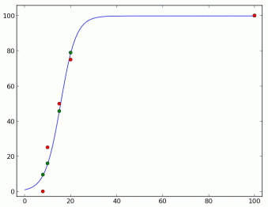
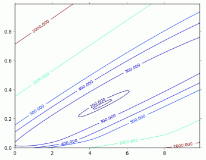

【样例解释】
很显然，这个队伍里面有一个神牛和一群水人。出题的时候应当把精力放在如何区分水人中谁更水，而不是牛人中谁更牛上。
最优的情况下，难度是 $4.662016$，区分度是 $0.299386$，此时实际得分是：
$99.999999，79.013041，45.729992，15.86770，9.389952$
下面这个图展示了理想得分、实际得分关于实力的函数。

作为对你的一个额外的提示，下面这个图是分数误差关于难度-区分度的图像。可以看到，这里只有一个极值点。

【数据规模和约定】
一共有 $10$ 个测试点，$P$ 的值依次是 $1$ 到 $10$。
对 100% 的数据，$N≤20$。
 Comet OJ
Comet OJ